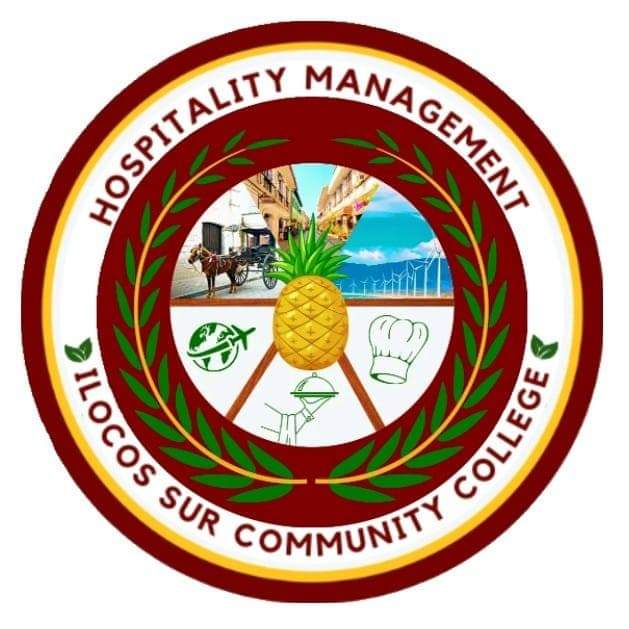
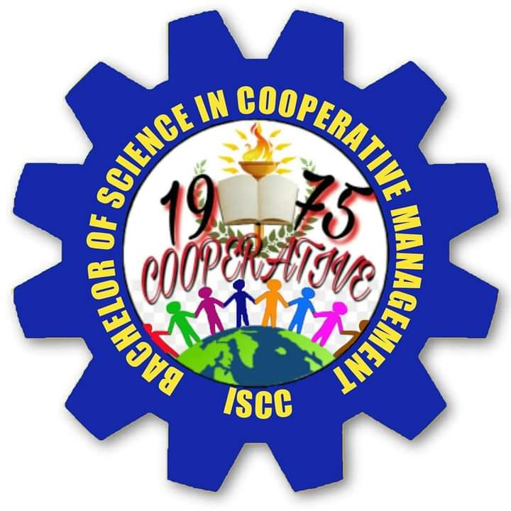
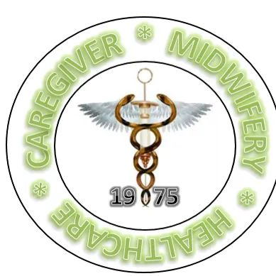
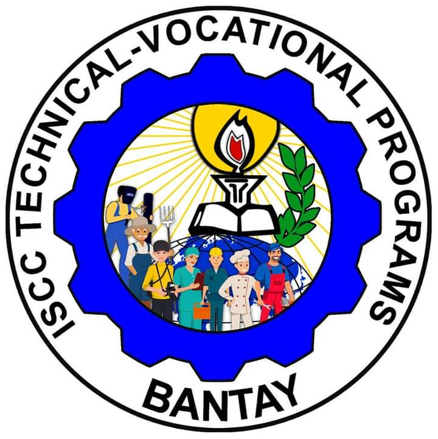

The Bachelor of Science in Information Technology (BSIT) program is a four-year degree program which focuses on the study of computer utilization and computer software to plan, install, customize, operate, manage, administer and maintain information technology infrastructure. It likewise deals with the design and development of computer-based information systems for real-world business solutions. The program prepares students to become IT professionals with primary competencies in the areas of systems analysis and design, applications development, database administration, network administration, and systems implementation and maintenance. The program also requires a Capstone project. It should be in the form of an IT applications development as a business solution for an industry need.
The Bachelor of Science in Hospitality Management (BS HM) is a four-year degree program that covers the process of planning, development, human resource management of the different aspects of the hotel, restaurant, and resorts operations. The program also intends to teach entrepreneurship skills. Furthermore, this program aims to provide an in -depth knowledge and skills about food and beverage service, along with fundamental concepts in finance, marketing and staff management. Students will learn to create and oversee high- quality guest experiences, including sporting events, conferences and five-star hotels.
The Bachelor of Science in Cooperative Management is a four-year degree program that prepares graduates to become globally competitive, competent, community oriented, innovative and value-laden organizers, advocates, educators and managers of cooperative enterprises, implementers of government programs and as community development workers. The course provides the graduates with adequate knowledge and competencies along the areas of cooperative principles, practices, laws, good governance and cooperative management operations systems.
To develop highly competent professionals who will be able to demonstrate expertise in the field of Midwifery practice. Encourage students to be Effective, Efficient and Excellent in the field of Midwifery and to have Empathy in the performance of their duties to the community.
It provides a curriculum that is a combination of Core Courses and specialized hands-on courses that meets the competency-based assessment of TESDA. At the end of the course, students will be able to take the TESDA National Certification Assessments.